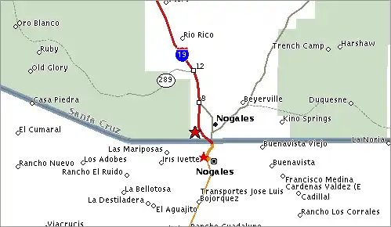
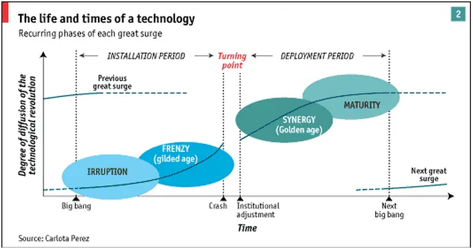

J'ai récemment lu 2 excellents livres concernant le rôle des institutions socio-politiques dans le développement économique :
"Pourquoi les nations échouent : les origines du pouvoir, de la prospérité et de la pauvreté" (par D. Acemoglu et J. Robinson)
"Révolutions technologiques, changements de paradigme et capital financier" (Carlota Perez)
Tout d'abord, j'essaierais de résumer la thèse de chaque auteur.
Ensuite, j'apporterais quelques remarques personnelles sur la théorie du changement de paradigme de Carlota Perez, qui m'a semblé beaucoup plus intéressante.
"Why Nations Fail : the Origins of Power, Prosperity and Poverty" (D. Acemoglu, J. Robinson)
Comment expliquer les différences de développement entre nations ? Pourquoi certains pays produisent une croissance durable, alors que d'autres stagnent ou s'enlisent dans la pauvreté ? La réponse des auteurs : les écarts de développement entre pays trouvent leur origine dans le type d'institutions économique et politique qui gèrent le marché et le vivre-ensemble.

En analysant une vaste période historique et plusieurs lieux (civilisation Maya, l'empire romain, l'Afrique sub-saharienne aux 19ème/20ème siècles entre autres), le livre se veut empirique et universel. Le plaidoyer est assez convaincant, notamment lorsqu'ils donnent l'exemple de la ville de Nogales, à cheval entre le Mexique et les Etats-Unis :
Les habitants sont en tout point similaires, partageant les mêmes aire géographique, histoire, climat, culture, religion et langue.
La partie nord de la ville (Etats-Unis) connait prospérité économique et justice sociale, alors que la partie sud (Mexique) est en proie à l'insécurité et au chômage de masse.
La seule différence pouvant expliquer ce décalage réside dans les institutions économique et politique régissant le marché et la société de chaque côté de la frontière.
Dans la partie Nord, les institutions sont dites "inclusives" car elles favorisent la création de valeur et partagent la richesse de manière plus efficiente. Dans la partie Sud, les institutions sont dites "extractives" car elles renforcent l'exploitation de la population par une classe économique et politique dominante, au détriment de la liberté, l'investissement et l'innovation.
Le fait que Bill Gates (Etats-Unis) ait fait fortune à travers l'innovation technologique (Microsoft Windows) et Carlos Slim (Mexique) à travers l'exploitation de monopoles (America Movil) est présenté comme une preuve définitive.
Cependant, en prenant au fil des pages l'apparence d'un catalogue d'exemples destinés à renforcer la thèse principale, le livre peut parfois paraître redondant et ennuyeux.
Ensuite, on peut difficilement s'en extraire sans une légère impression d'avoir lu de la propagande néo-libérale. Pour les auteurs, il y'a les bonnes institutions, c'est-à-dire celles qui supportent le libéralisme, et les autres, mauvaises. Le côté simpliste et figé de la thèse dérange; les propos sont rarement relativisés.
Néanmoins, si cette thèse peut être validée sur le long terme, elle ne nous explique pas les phases de récession temporaire que traversent même les nations disposant d'institutions "inclusives". Le hasard faisant bien les choses, il se trouve que j'ai découvert l'économiste Carlota Pérez (Venezuela) peu de temps après avoir lu "Why Nations Fail", et qu'elle explicite ce dernier point.
"Révolutions Technologiques et Capital Financier" (Carlota Perez)
Carlota Perez complète les travaux de Schumpeter et Kondratiev sur les cycles économiques en leur adjoignant une réflexion sur les sphères politique et culturelle.
L'idée principale : les institutions politiques et économiques sont également soumises au processus de "destruction créatrice" décrit par Schumpeter. Afin de prendre son essor, chaque nouveau cycle économique nécessite une transformation culturelle (« évolution du système de croyances ») et, surtout, une mise à jour du cadre institutionnel.
Contrairement à Acemoglu et Robinson, l'approche de Carlota Perez n'est pas empreinte d'idéologie. Dans l'absolu, il n'y a pas de bonnes ou mauvaises institutions : il convient de trouver la pièce adéquate pour compléter le puzzle, et cette dernière peut prendre diverses formes en fonction du contexte.
Son approche nous rappelle le célèbre syndicaliste italien Antonio Gramsci qui avait défini les crises comme : "Ce moment où le vieux tarde à mourir et le neuf tarde à naître".
La Notion de Paradigme Techno-Économique

Pour Carlota Perez, les principaux moteurs des évolutions économiques et sociales sont : - L’entrepreneur (celui qui innove, prend des risques, à ne pas confondre avec le capitaliste ou rentier, plutôt intéressé par le status quo). - Les innovations technologiques de rupture.
Tous deux sont à l'origine de nouveaux cycles, dits "paradigmes techno-économiques". Chaque paradigme se caractérise par de nouveaux modes de production et de consommation, donc de nouvelles méthodes de création de valeur.
En théorie, tout paradigme techno-économique traverse 3 phases :
Phase d’installation : La croissance économique est portée par les nouvelles innovations de rupture. Cette période est dominée par l'euphorie et la spéculation financière.
Phase de récession, dite « crise d’ajustement » : C'est la partie « destruction » dans le processus de « destruction créatrice ». Cette période se caractérise par une disparition des emplois et produits/services rendus caduques par le nouveau paradigme. Tant que les institutions ne sont pas mises à jour, le décalage entre les sphères techno-économique et socio-politique provoquera des tensions : récession économique, chômage structurel, perte de repères socio-culturels, troubles sociaux et politiques, guerre, développement d’idéologies extrémistes et protectionnisme entre autres.
Phase de déploiement : Le décalage entre les 2 sphères étant résolu, alignant ainsi les intérêts des différentes parties prenantes, l’âge d’or est enclenché. Cette période se caractérise par une croissance durable et une création massive d'emplois.
Dans La Pratique : Une Crise d'Ajustement Depuis 2008
Il serait intéressant de confronter le schéma de pensée de Carlota Perez à l'histoire récente de notre monde :
La phase d'installation de notre nouveau paradigme a certainement débuté au milieu des années 90, propulsée par les nouvelles technologies de l’information et de la communication.
La spéculation financière autour de ces innovations a bien eut lieu, permettant d'imposer les infrastructures nécessaires (PC, téléphone mobile, réseaux ADSL/WiFi, GPS, navigateurs, protocoles de transfert de données etc...) et voir les premiers pure players prendre des positions dominantes (Google, Amazon). Son apogée aurait été marquée par la bulle technologique de l'an 2000.
La crise économique de 2008, enclenchant une longue phase de récession, indique la fin du paradigme techno-économique antérieur (celui hérité des 30 Glorieuses).
Notre période actuelle se caractérise effectivement par des tensions socio-politiques traduisant des difficultés d'adaptation au nouveau paradigme : chômage structurel, montée des partis fascistes en Occident, manifestations anti-mondialisation (OMC), anti-blocs régionaux (Brexit) et anti-multinationales technologiques (Uber, Google) etc...
Selon Carlota Perez, ces tensions ne peuvent être résorbées sans mise à jour du cadre institutionnel. Mais, au vu de la réalité et des motivations de chaque camp, l'équation n'est pas simple à résoudre :
D’une part, une sphère techno-économique se transformant à un rythme effréné et impactant de plus en plus nos modes de vie. Presque tous les secteurs économiques et activités sociales ont subi une tentative de réinvention par le numérique : "Software is eating the world !" comme dit le fameux article de Marc Andreessen.
De l’autre, une sphère politique pressée tant de l’extérieur (troubles sociaux, besoin de cajoler l'électeur) que de l’intérieur (inertie administrative, protection des acquis politiques) de maintenir un système hérité du 20ème siècle.
Mais, pour savoir comment réinventer le cadre institutionnel, il faut d'abord répondre à la question : quelles sont les transformations fondamentales induites par la révolution numérique ?
Les Principaux Effets de la Révolution Numérique
La liste est infinie et toute personne suivant l'actualité économique et technologique peut s'en faire une idée. Cependant, derrière la profusion d'innovations, 2 phénomènes ressortent en filigrane pour guider notre réflexion : la transformation du concept de "travail" et l'abondance d'informations.
Tout d'abord, ce que l'opinion publique regroupe sous le terme "Uberisation", mais qui indique surtout le développement de nouvelles formes de travail. En effet, la création de valeur ne se fait plus seulement à travers le salariat classique. Il y'a bien sûr le développement du travail à temps partiel, en freelance ou en tant qu'indépendant via des plateformes online. Mais il y'a également le travail digital où de la valeur est extraite sans rémunération du producteur. Les frontières entre tous ces rôles deviennent floues : le consommateur/utilisateur est également producteur et les particuliers concurrencent les entreprises en offrant également des produits/services sur le marché.
Ensuite, les révolutions technologiques précédentes ont 2 caractéristiques communes :
D'une part, dans chaque cycle, une ressource particulière devient abondante et peu chère (les produits agricoles, le transport, l'acier) impactant positivement d'autres secteurs (santé, commerce, productivité industrielle), enclenchant ainsi un cercle vertueux. Dans le cas actuel de la révolution numérique, l'actif abondant est clairement "l'information" ou "donnée numérique" (au sens large du terme) qui peut être produite pour un coût marginal proche de zéro. Les statistiques sont impressionnantes : 2,5 trillions d'octets de données sont générées par jour dans le monde et 90% des données mondiales ont été générées ces 2 dernières années.
D'autre part, dans chaque cycle, un actif particulier se voit surexploité (les terres agricoles, les matières premières ou l'énergie fossile), pouvant entraîner des déséquilibres et rendre la croissance moins durable. Dans le cas actuel de la révolution numérique, quel élément risque d'être sacrifié afin de maximiser la production de données ? S'agit-il de notre vie privée, à laquelle prestataires de services, employeurs et gouvernements veulent avoir accès ? S'agit-il de notre capacité de concentration et d'attention, actif limité (il n'y a que 24h dans une journée) devenu l'objet de compétitions entre marques, médias, applications etc ?
Quelle Mise À Jour des Institutions Pour Permettre l'Émergence d'Un Nouvel Âge d'Or ?
Prétendre connaître la réponse serait prétentieux de ma part. Mais voici quelques sujets de réflexion qui me semblent intéressants :
Les progrès scientifiques et technologiques (séquençage de l'ADN, tracking de la santé en temps réel) ne justifient-ils pas une réorientation de "l'assurance maladie" vers la prévention plutôt que le soin ? Les états ne pourraient-ils pas ainsi réaliser des économies conséquentes ?
A contrario, la réduction de l'offre de travail (induite par la robotisation et digitalisation de nombreux process), en forçant de plus en plus de personnes à des phases temporaires de chômage ou à s'improviser auto-entrepreneurs, ne justifie-t-elle pas l'élargissement de "l'assurance chômage" même aux non-salariés ? Dans le même sens, l'instauration d'un revenu universel de base est-elle une piste intéressante ?
A l'heure du connecté 24h/24 et de la désindustrialisation (prédominance des services), ne faut-il pas donner autant d'importance aux maladies psychiques (Cf "burn-out") qu'il a jadis été donné aux accidents physiques du travail ?
Le système syndical du 20ème siècle, adéquat à l'ère de la production de masse, est-il encore pertinent alors que se développent le travail à distance ou en tant qu'indépendant ?
Les contraintes budgétaires des Etats les poussant de plus en plus à abandonner l'éducation publique, alors qu'en parallèle la connaissance n'a jamais été aussi diffuse et accessible online, n'encourage-t-elle pas à reconnaître de nouveaux moyens de certifier les connaissances et compétences des individus ? L'idée d'une formation unique pour un job à vie n'est-elle pas trop rigide pour une période où le progrès technologique rend certains emplois/compétences rapidement caduques et impose des reconversions express ?
La question de la transparence, de la propriété et de l'usage des données personnelles semble central : Ne faut-il pas inverser la situation actuelle où les affaires publiques sont parfois gérées dans l'opacité alors que la vie privée des individus est mise à nu ? Pourquoi un individu exerçant une activité via une plateforme online (Uber, Airbnb, Amazon) ne peut pas transporter son profil (réputation, évaluations, sorte de mini-CV) s'il décide de rejoindre une plateforme concurrente ?
La démocratie représentative n'est-elle pas un système dépassé à l'heure où les citoyens démontrent une envie croissante de s'impliquer sur les questions de société (initiatives citoyennes propulsées via les réseaux sociaux, communautés digitales sur des thématiques de niche) et que les moyens technologiques permettent d'innover sur ce terrain (Cf démocratie liquide) ?
On pourrait continuer ainsi et trouver matière à repenser divers systèmes tant il me semble qu'aucun champ n'a été épargné par la révolution numérique.
D'ailleurs, devant l'immobilisme des Etats, nombre d'initiatives privées se mettent déjà en place pour combler cette brèche : Freelancers Union (syndicat de freelances); WeMind (sécurité sociale pour indépendants); DataCoup et DigiMe (pour qu'un particulier puisse lui-même vendre ses données personnelles); GiveDirectly (qui expérimente le revenu universel au Kenya) etc...
Conclusion
L'intérêt principal de ces théories est qu'elles soulignent plus que jamais le rôle crucial de l’Etat, alors même que les sirènes néo-libérales de par le monde invitent à un retrait de ce dernier du champ socio-économique.
Par opposition à la réflexion quelque peu figée de Robinson et Acemoglu, l'approche systémique de Carlota Perez semble plus conforme au réel. Il y'a notamment cette dimension culturelle (adaptation du "système de croyances" au nouveau paradigme) que j'espère creuser à l'avenir.
Cependant, on peut regretter que les 2 approches confinent l’action publique au rôle "d’accompagnateur" subordonné aux évolutions technologiques, entérinant ainsi la mainmise de l’économique sur le politique.
Mais elles montrent par dessus tout que la crise actuelle ne peut-être traitée comme les crises conjoncturelles précédentes : les débats entre tenants des politiques de rigueur VS politiques de relance, ou entre approches libérales VS collectivités, ne résoudraient que de manière marginale la problématique. Repenser le cadre socio-institutionnel et lancer des réformes de fond deviennent des impératifs.
Notes: